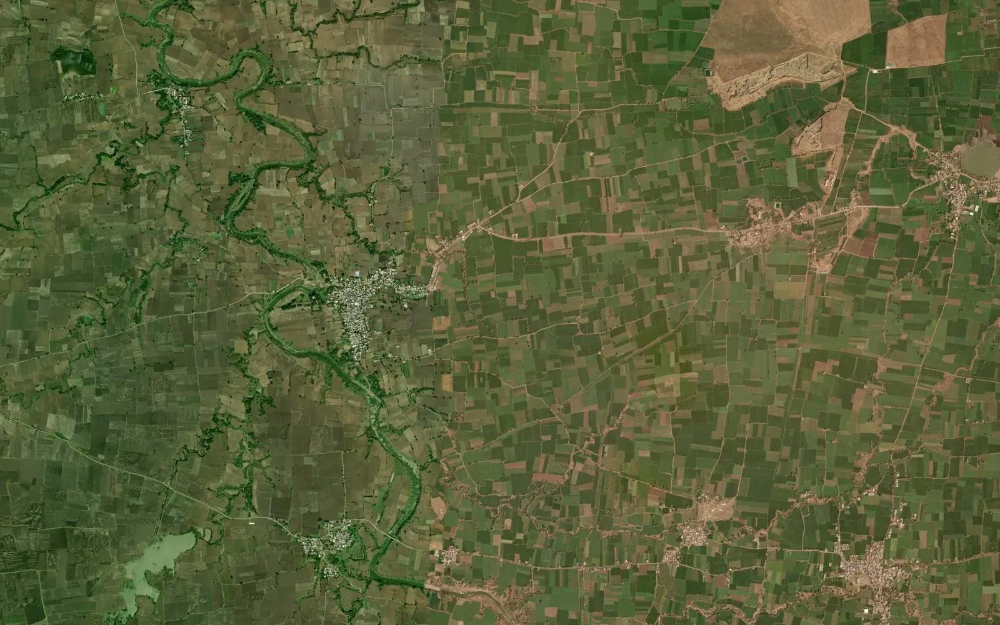
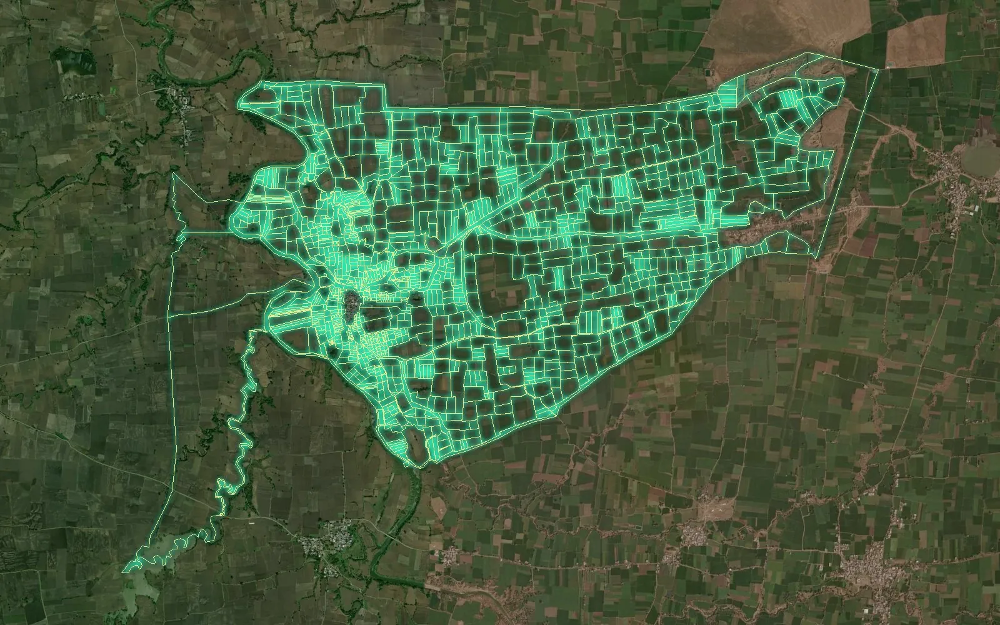
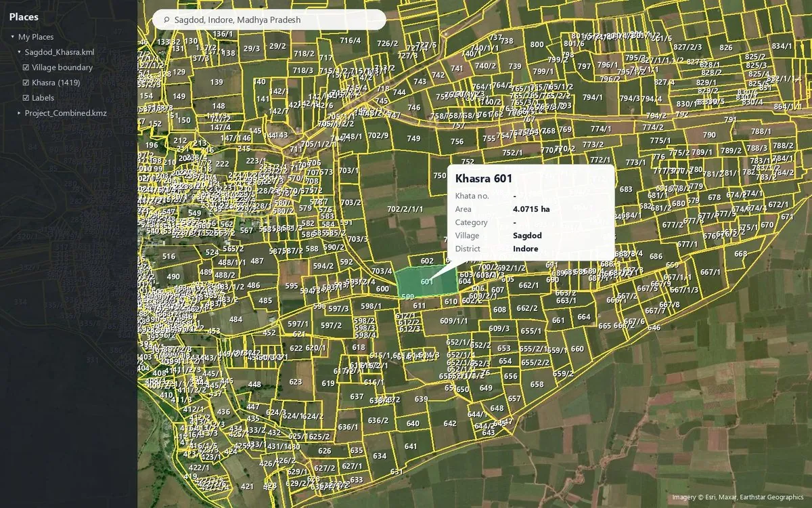
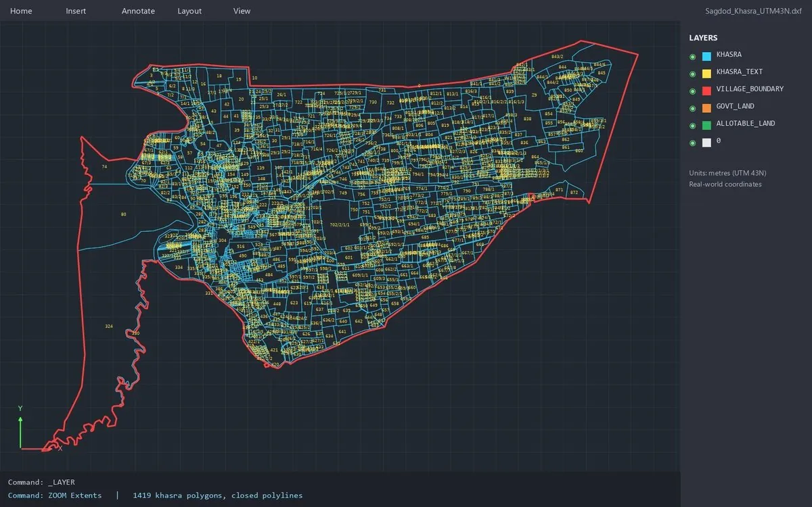

Madhya Pradesh khasra map – revenue & cadastral maps in KML, DWG and SHP
Looking for the Madhya Pradesh revenue map or cadastral map of a village? We turn the public land-record map (bhu-naksha) into a clean, georeferenced GIS file: every khasra number is a closed polygon with its number, aligned to satellite imagery in WGS 84 / UTM coordinates – ready for Google Earth, AutoCAD, QGIS or ArcGIS. One village, a whole tehsil or a full district.
Sample village from Madhya Pradesh
Sagdod, Indore · 1,419 plots – a real village from the public land record, digitized and georeferenced by us. Open it on the live map.




What you get for every Madhya Pradesh village
- Every khasra number as a polygon with its number – no overlaps, no gaps between plots
- Georeferenced on satellite imagery (WGS 84 / UTM) – the lines sit on the real field edges
- Village outer boundary inside every file; neighbouring villages join edge to edge
- KML / KMZ, DWG / DXF, SHP and an Excel list with areas (hectare / acre)
- On request: colour-coded land category (private, government, allotable), one combined project layer
Who uses Madhya Pradesh cadastral maps
Solar and wind developers (land identification and layouts), transmission line and road projects (route and right-of-way), land aggregators, real estate, banks and due-diligence teams, surveyors and government contractors working in Madhya Pradesh.
Field survey too
DGPS, Total Station, topographic and contour surveys, drone mapping, demarcation, route surveys and FMB sketches for wind projects – delivered on top of the khasra map. See our survey services.
Districts of Madhya Pradesh we cover
Khasra / cadastral maps for every district:
Questions
Can you make the cadastral (revenue) map of any village in Madhya Pradesh?
Yes. We prepare the khasra / cadastral map of any village in Madhya Pradesh from the public land-record map (bhu-naksha). Every khasra number is digitized as a polygon with its number and placed on satellite imagery in real coordinates. One village or a whole tehsil or district.
Which formats do I get for Madhya Pradesh khasra maps?
KML / KMZ for Google Earth, DWG / DXF for AutoCAD, SHP for QGIS / ArcGIS and an Excel list of plots with areas. A colour-coded land category map and a combined layer of all project villages are available.
Is the Madhya Pradesh map the same as the khasra / B-1 khatauni?
No. The khasra / B-1 khatauni is the written record of rights (owners, areas). The khasra map shows where each khasra number lies on the ground. We deliver the map; the record of rights stays with the Madhya Pradesh land-record portal (MP Bhulekh).
How fast is the delivery?
Most single-village orders are ready within 24-48 hours; project areas with many villages are planned with you in the quotation. Every quotation is valid for 7 days.
Is it a legal survey?
Digitized land-record maps are for planning and reference. For boundaries that matter legally we also do DGPS / Total Station demarcation surveys on the ground.
Get a quotation for Madhya Pradesh
Send the district, tehsil and village names – even a single village. Price per map and delivery time come back quickly.